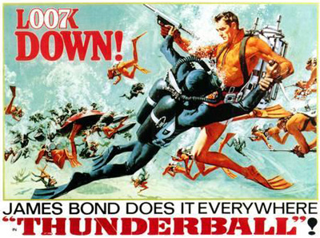
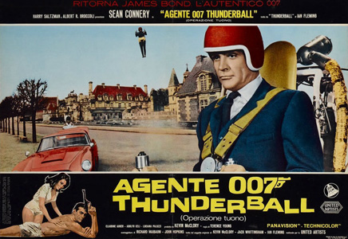
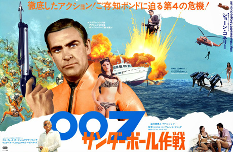
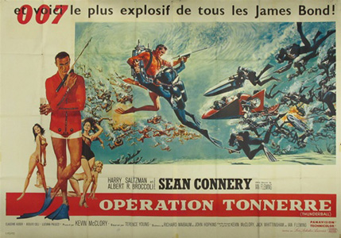
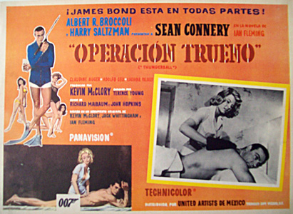
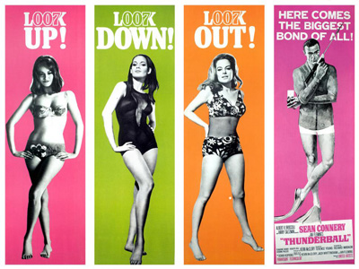

Richard Maibaum
John Hopkins
James Bond attends the funeral of Colonel Jacques Bouvar, a SPECTRE operative connected with the previous murders of two MI6 agents. Bouvar is alive and disguised as his own widow, but Bond identifies him. Pursuing Bouvar to his château, Bond fights and kills him, escaping with use of a jetpack and his Aston Martin DB5, conveniently driven up by French agent, Madame La Porte.
At a SPECTRE meeting in Paris, chaired by the enigmatic Number 1, Emilio Largo (SPECTRE operative Number 2) introduces the group's latest project: hijacking two atomic bombs and holding NATO for ransom. The plot begins at Shrublands sanatorium, located close to a NATO air base. Coincidentally, James Bond is at Shrublands to improve his health. There, he notices that fellow patient Count Lippe has a Tong tattoo. Bond searches Lippe's room, and is seen leaving by the man in the adjoining room, whose head is covered in bandages. Lippe tries to murder Bond with a spinal traction machine, but Bond is saved by his physiotherapist, Patricia Fearing, whom he then blackmails into having sex in exchange for not telling her boss about the incident on the machine.
Lippe and Angelo Palazzi, the bandaged man, are part of SPECTRE'S plot. Angelo's face has been surgically altered to match French Air Force pilot François Derval, who is also staying at Shrublands. Derval is slated to fly on a training mission aboard an RAF Avro Vulcan strategic jet bomber loaded with two atomic bombs. Angelo kills Derval, collects $100,000 from SPECTRE Agent Fiona Volpe, then demands an extra $150,000 for the job. Fiona seemingly acquiesces. The next morning, Angelo takes Derval's place on the flight. Angelo gasses the rest of the crew, then flies the Vulcan to the Bahamas, landing it in shallow water near Largo's ship, the Disco Volante. SPECTRE SCUBA divers, commanded by Largo, retrieve the atomic bombs. Angelo, trapped by his seat strapping, is left to die by Largo for reneging on his original deal with SPECTRE.
Meanwhile, Bond has uncovered Derval's corpse at the sanatorium. On the road to London, Lippe attacks Bond. But a masked motorcyclist kills Lippe with a rocket-propelled grenade and zooms away. The rider abandons the motorcycle and unmasks: it is Fiona, acting on Number 1's orders to remove Lippe for employing the greedy Angelo.
At an MI6 conference in London, all of the 00 agents are informed that SPECTRE demands £100 million from NATO in exchange for returning the bombs, and threatens to destroy a major city in the United States or the United Kingdom. Bond recognises the briefing photograph of Derval as the corpse at Shrublands. He asks M to send him to Nassau, Bahamas, to contact Derval's sister, Domino.
While snorkelling, Bond meets Domino. Later, at a casino, he encounters Largo and Domino, who is his mistress. Bond enters a game against Largo and wins, and subsequently takes Domino to a dance. Bond and Largo recognise each other as adversaries and begin a tense cat-and-mouse game while still pretending ignorance of each other's true nature. Bond meets Felix Leiter and Q, and is issued various gadgets, including an underwater infrared camera, a distress beacon, underwater breathing apparatus, a flare gun, and a Geiger counter. Diving under the Disco Volante, Bond fails to find the atomic bombs, but detects an underwater hatch; Bond narrowly escapes Largo's henchmen. The next day, Bond visits Largo at his estate, Palmyra.
Bond is kidnapped by Fiona Volpe, but escapes through a Junkanoo celebration to the Kiss Kiss club, where Fiona is accidentally shot and killed by her own bodyguard. Bond and Felix search for the Vulcan, finding it under water. Bond tells Domino that Largo killed her brother and asks her for help in finding the bombs, giving her his Geiger counter. As she searches for the bombs on the ship, she is caught and tortured by Largo.
Meanwhile, Bond disguises himself as a Largo henchman, and uncovers Largo's plan to destroy Miami Beach. Bond is discovered by Largo, but rescued by Leiter, who has United States Coast Guard men parachute into the area via US Air Force transport aircraft. After an underwater battle, Largo's divers surrender. Largo escapes to the Disco Volante, which has one of the bombs on board. As it begins to leave, Bond gets on a underwater fin. Royal Navy and U.S. Coast Guard vessels pursue the Disco Volante, but Largo jettisons the rear of the ship, revealing the front as a hydrofoil, which escapes at high speed in a smoke cloud. Bond climbs into the ship's cockpit, where he battles Largo and two crewmen while the ship weaves erratically among rocks and reefs. Meanwhile Largo's hired nuclear physicist Kutze turns against him and frees Domino. Largo is about to shoot Bond when Domino shoots Largo with a harpoon gun. Bond, Domino, and Kutze jump overboard, and the ship runs aground and explodes. A sky hook-equipped CIA B-17 aircraft then rescues Bond and Domino.
Originally meant as the first James Bond film, Thunderball was the centre of legal disputes that began in 1961 and ran until 2006. Former Ian Fleming collaborators Kevin McClory and Jack Whittingham sued Fleming shortly after the 1961 publication of the Thunderball novel, claiming he based it upon the screenplay the trio had earlier written in a failed cinematic translation of James Bond. The lawsuit was settled out of court; McClory retained certain screen rights to the novel's story, plot, and characters. By then, Bond was a box-office success, and series producers Broccoli and Saltzman feared a rival McClory film beyond their control; they agreed to McClory's producer's credit of a cinematic Thunderball, with them as executive producers.
Later, in 1964, Eon producers Broccoli and Saltzman agreed with McClory to cinematically adapt the novel; it was promoted as "Ian Fleming's Thunderball". Yet, along with the official credits to screenwriters Richard Maibaum and John Hopkins, the screenplay is also identified as 'based on an original screenplay by Jack Whittingham' and as 'based on the original story by Kevin McClory, Jack Whittingham, and Ian Fleming'. To date, the novel has twice been adapted cinematically; the 1983 Jack Schwartzman-produced Never Say Never Again features Sean Connery as James Bond, but is not an Eon production.
Guy Hamilton was invited to direct, but considered himself worn out and "creatively drained" after the production of Goldfinger. Terence Young, director of the first two Bond films, returned to the series. Coincidentally, when Saltzman invited him to direct Dr. No, Young expressed interest in directing adaptations of Dr. No, From Russia with Love and Thunderball. Years later, Young said Thunderball was filmed "at the right time", considering that if it was the first film in the series, the low budget (Dr. No cost only $1 million) would not have yielded good results. Thunderball was the final James Bond film directed by Young.
Filming commenced on 16 February 1965, with principal photography of the opening scene in Paris. Filming then moved to the Château d'Anet, near Dreux, France, for the fight in precredit sequence. Much of the film was shot in the Bahamas; Thunderball is widely known for its extensive underwater action scenes which are played out through much of the latter half of the film. The rest of the film was shot at Pinewood Studios, Buckinghamshire, Silverstone racing circuit for the chase involving Count Lippe, Fiona Volpe's RPG-armed BSA Lightning motorcycle and James Bond's Aston Martin DB5 before moving to Nassau, and Paradise Island in the Bahamas (where most of the footage was shot), and Miami. Huntington Hartford gave permission to shoot footage on his Paradise Island and is thanked at the end of the film.
On arriving in Nassau, McClory searched for locations to shoot many of the key sequences of the film and used the home of a local millionaire couple, the Sullivans, for Largo's estate, Palmyra. Part of the SPECTRE underwater assault was also shot on the coastal grounds of another millionaire's home on the island. The most difficult sequences to film were the underwater action scenes; the first to be shot underwater was at a depth of 50 feet to shoot the scene where SPECTRE divers remove the atomic bombs from the sunken Vulcan bomber. Peter Lamont had previously visited a Royal Air Force bomber station carrying a concealed camera which he used to get close-up shots of secret missiles (those appearing in the film were not actually present). Most of the underwater scenes had to be done at lower tides due to the sharks on the Bahamian coast.
After he read the script, Connery realised the risk of the sequence with the sharks in Largo's pool and insisted that production designer Ken Adam build a Plexiglas partition inside the pool. The barrier was not a fixed structure, so when one of the sharks managed to pass through it, Connery fled the pool, seconds away from attack. Ken Adam later told UK daily newspaper The Guardian,
"We had to use special effects, but unlike special effects today, they were real. The jet pack we used in Thunderball was real - it was invented for the United States Army. Bloody dangerous, and it only lasted a couple of minutes. The ejector seat in the Aston Martin was real and Emilio Largo's boat, the Disco Volante, was real. You had power boats at that time, but there were no good-sized yachts that were able to travel at 40 to 50 knots, so it was quite a problem. But by combining a hydrofoil, which we bought in Puerto Rico for $10,000, and a catamaran, it at least looked like a big yacht. We combined the two hulls with a one-inch slip bolt and when they split it worked like a dream. We used lots of sharks for this movie. I'd rented a villa in the Bahamas with a saltwater pool which we filled with sharks and used for underwater filming. The smell was horrendous. This was where Sean Connery came close to being bitten. We had a plexiglass corridor to protect him, but I didn't have quite enough plexiglass and one of the sharks got through. He never got out of a pool faster in his life - he was walking on water."
When special-effects coordinator John Stears provided a supposedly dead shark to be towed around the pool, the shark, which was still alive, revived at one point. Due to the dangers on the set, stuntman Bill Cummings demanded an extra fee of £250 to double for Largo's sidekick Quist as he was dropped into the pool of sharks.
The climactic underwater battle was shot at Clifton Pier and was choreographed by Hollywood expert Ricou Browning, who had worked on Creature From the Black Lagoon in 1954 and other films. He was responsible for the staging of the cave sequence and the battle scenes beneath the Disco Volante and called in his specialist team of divers who posed as those engaged in the onslaught. Voit provided much of the underwater gear in exchange for product placement and film tie-in merchandise. Lamar Boren, an underwater photographer, was hired to shoot all of the sequences. United States Air Force Lieutenant Colonel Charles Russhon, who had already established Eon productions' rapports with the local authorities in Turkey for From Russia with Love (1963) and at Fort Knox for Goldfinger (1964), supplied the experimental rocket fuel used to destroy the Disco Volante. Russhon, using his position, was also able to gain access to the United States Navy's Fulton surface-to-air recovery system, used to lift Bond and Domino from the water at the end of the film. Filming ceased in May 1965, and the final scene shot was the physical fight on the bridge of the Disco Volante.
While in Nassau, during the final shooting days, special-effects supervisor John Stears was supplied experimental rocket fuel to use in exploding Largo's yacht. Ignoring the true power of the volatile liquid, Stears doused the entire yacht with it, took cover, and then detonated the boat. The resultant massive explosion shattered windows along Bay Street in Nassau roughly 30 miles away. Stears went on to win an Academy Award for his work on Thunderball.
As the filming neared its conclusion, Connery had become increasingly agitated with press intrusion and was distracted with difficulties in his marriage of 32 months to actress Diane Cilento. Connery refused to speak to journalists and photographers who followed him in Nassau, stating his frustration with the harassment that came with the role; "I find that fame tends to turn one from an actor and a human being into a piece of merchandise, a public institution. Well, I don't intend to undergo that metamorphosis." In the end he gave only a single interview, to Playboy, as filming was wrapped up. According to editor Peter R. Hunt, Thunderball's release was delayed for three months, from September until December 1965, after he met David Picker of United Artists, and convinced him it would be impossible to edit the film to a high enough standard without the extra time.





